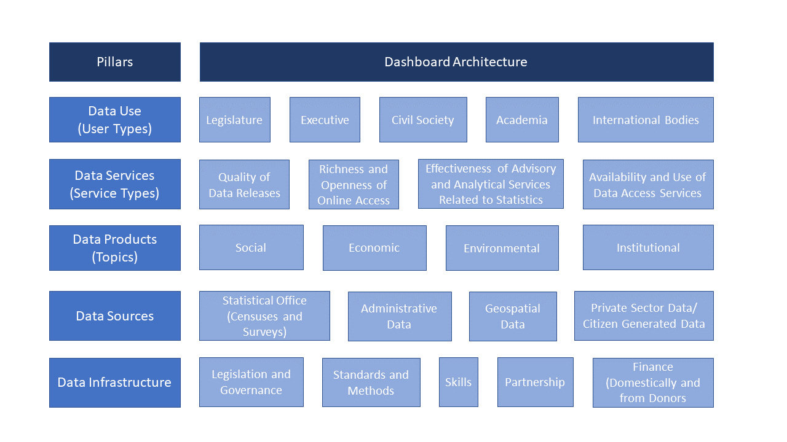

Measuring the Statistical Performance of Countries: An Overview of Updates to the World Bank Statistical Capacity Index
2021-03-24
Abstract
Recognizing the new challenges for national statistical systems in monitoring the Sustainable Development Goals (SDGs), the World Bank is developing a new, improved Statistical Performance Indicators (SPI) to monitor progress of the statistical performance of countries. This will replace the Statistical Capacity Index (SCI) the World Bank has regularly published since 2004. This short note briefly discusses the motivation behind the new SPI, describes some of its major features, and discusses a new index based on the indicators.Chapter 1 Introduction
This document contains a detailed technical description of the Statistical Performance Indicators (SPI). The document contains a detailed description of each indicator, as well as the R code used to construct each indicator.
1.1 Acknowledgements
The work on the Statistical Performance Indicators (SPI) has benefited greatly from the advice, comments and input of many individuals outside the World Bank SPI Team. The work took place under the overall guidance of Haishan Fu, Director of the Development Data Group at the World Bank, who played a key role in helping shape the framework of statistical performance developed here. We are grateful to the SPI Technical Advisory Group consisting of former National Statistician of the Philippines and Director of the Philippine Statistics Authority Lisa Bersales, the Director General of the National Institute of Statistics of Rwanda Yusuf Murangwa, the Chief Statistician of Colombia Juan Oviedo, and the former Director General of Eurostat and Chief Statistician of the European Union Walter Radermacher, and chaired by former National Statistician of the UK, John Pullinger.
Several World Bank colleagues provided valuable feedback to this project. They include Claudia P Rodriguez Alas, Rabah Arezki, Joao Pedro Wagner De Azevedo, Benu Bidani, Carlos Rodriguez Castelan, Ximena Del Carpio, Olivier Dupriez, Uche Ekhator, Tony Henri Mathias Jany Fujs, Nada Hamadeh, Craig Hammer, Tim Herzog, Kristen Himelein, Johannes Hoogeveen, Asif Mohammed Islam, Dean Jolliffe, Talip Kilic, Christoph Lakner, Maria Ana Lugo, Daniel Gerszon Mahler, Johan A. Mistiaen, Rinku Murgai, Ambar Narayan, Minh Nguyen, Utz Johann Pape, Martin Rama, Pierella Paci, Carolina Sanchez-Paramo, Ana Florina Pirlea, Emi Suzuki, Emil Daniel Tesliuc, Satoshi Tozaki, Tara Vishwanath, Divyanshi Wadhwa, Matthew Welch, Phillip Wollburg, Salman Zaidi, and Hassan Zaman. Elysee Kiti and Tigist Shibru provided superb administration support.
Additionally, we benefited from discussions with the following: Louis Marc Ducharme, Jimmy McHugh, Brett Humburg, Francis Cicero de Leon Bobadilla, and Aubriana Wolferts (IMF)); Pietro Gennari (FAO); Francesca Perucci and Yongyi Min (UN Statistics Division); Ramesha Saligrama Krishnamurthy and Rifat Hossain (WHO); Viveka Palm (Eurostat); Rafael Diez de Medina, Ritash Sarna, Marie-Claire Sodergren, and Lara Badre (ILO); Silvia Montoya and Adolfo Imhof (UNESCO Institute of Statistics); Paul Schreyer (OECD); Emily Poskett (ONS, UK); Phil Cockerill (FCDO, UK); Johannes Jutting, Francois Fonteneau, Julia Schmidt, Yu Tian, and Archita Misra (PARIS21); Shaida Badiee, Eric Swanson and Jamison Crowell (Open Data Watch); Claire Melamed (GPSDD); Misha Belkindas (ODW Consulting); Mike Hughes (Full Fact); Peter Rosendorff (New York University); James Hollyer (University of Minnesota); and James Vreeland (Princeton University).
We apologize for any omissions and express our sincere gratitude to everyone, whether or not they are named here, who graciously gave their time and expertise. We are grateful to the United Kingdom Foreign, Commonwealth and Development Office (FCDO, formerly named the Department for International Development) for funding assistance through Knowledge for Change (KCP) grants, including one for the World Development Report 2021 “Data for Better Lives”.
1.2 Motivation
National statistical systems are at the heart of the successful governance of nations. They provide an essential public service, helping governments make decisions about the economy, society and environment and enabling citizens to hold those governments to account.
The 2030 agenda for sustainable development has created a framework of goals and targets of universal applicability, designed to ensure that no one is left behind. This agenda requires national statistical systems to work together with other stakeholders within and across nations and regions to measure progress in a consistent and relevant way. At the same time, the data revolution has resulted in previously unimaginable sources of data becoming available that can be mobilized in support of the 2030 agenda in an open, transparent, and ethical manner.
However, many nations are struggling to build the necessary financial, human and technological capability to meet these goals. Assessing and improving the capacity of national statistical systems has long been part of the global agenda for statistics. Capacity assessment tools have been developed by organizations including PARIS21, the Food and Agriculture Organization of the United Nations (FAO), the United Nations Economic Commission for Europe (UNECE), the United Nations Economic Commission for Africa (UNECA) and the US Census Bureau.
Since 2004, the World Bank’s Statistical Capacity Index (SCI) has been part of this global toolkit. The SCI has been used by several national and international agencies to measure progress in statistical capacity building and related investments. To remain useful in the current and future data landscape, the SCI needs to be updated. The SCI incorporates only a limited number of indicators and does not assess use of data sources beyond traditional censuses and surveys. Neither does the SCI consider data dissemination and how data are used. Finally, the SCI places a large weight on statistical output and activities, while neglecting the infrastructure and resource components of statistical systems.
The COVID-19 pandemic has added extra motivation and impetus for understanding and improving the performance of national statistical systems. Without good statistics, countries are hamstrung in their response to the pandemic and in navigating towards a better future. The statistical performance indicators proposed in this paper are a response to that motivation. The indicators are intended to be applicable to all nations and to be forward looking and comprehensive. They are designed to be used by national governments and statistical offices as well as international agencies and donors. The aim is to help create a learning data ecosystem that can develop and adapt iteratively to the ever-changing requirements of government and citizens for better data to support better decisions.
1.3 Overview of the SPI Framework
The new Statistical Performance Indicators (SPI) build on the Statistical Capacity Indicators The new Statistical Performance Indicators (SPI) build on the Statistical Capacity Index (SCI), which the World Bank regularly published between 2004 and 2021. The SPI framework covers several of the same attributes as the SCI, such as statistical methodology, data, and periodicity, but expands into new areas as well. The goals of introducing the SPI are: to offer a forward looking framework, to measure all statistical systems – from less mature to highly advanced, to cover the entire national statistical system - not just the National Statistical Office (NSO), and to provide countries incentives to build modern statistical systems. To help build transparency and confidence in the work, as well as to improve understanding and encourage further experimentation, refinement, and improvement of the measures, the data and the code underlying the construction of the SPI are made open.1
Figure 2.1: Virtuous Data Cycle

By helping countries identify the strengths and weaknesses of their national statistical system, the SPI can be a guide to decisions about priorities for investment and can help identify partner countries from which they might learn. This in turn can help both donor and recipient countries ensure that development assistance is targeted on areas of most national benefit. The SPI follows an approach that considers the system as a whole, which incorporates users, producers and partners at various levels. The indicators are designed to be dynamic and forward looking. Improvements in performance can be represented as a virtuous data cycle that can become self-sustaining. In this model, adapted from work done by the Organization for Economic Cooperation and Development, PARIS21 and Open Data Watch, investment in data leads to higher levels of effectiveness which drives innovation, value added and impact.
The impact sought from national statistical systems is better decisions and stronger accountability. The way in which national statistical systems contribute to better decisions and stronger accountability is by meeting user needs for statistics. Such user needs are in turn met by the design and production of statistics and statistical indicators. The process of design and production relies on a wide range of organizations, working in partnership with the national statistical office as part of the national statistical system to develop and utilize richer data sources. To be successful the whole data ecosystem needs to build its capability to adapt and thrive.
Statistics have no value unless they are used. Consequently, the first pillar of the SPI is data use. A successful statistical system is one that produces data products that are highly used. To meet user needs, the statistical system must develop a range of services that connect data users and producers and facilitate dialogue between them. The second pillar of the SPI is therefore data services that are trusted by users. A successful statistical system is one with highly valued and well used statistical services.
The dialogue between users and suppliers in turn drives the design and quality of statistical products that are created to meet the country requirement. These products should incorporate accuracy, timeliness, frequency, comparability, and levels of disaggregation. The third pillar of the SPI is therefore data products. A successful statistical system is one that generates high quality statistical indicators that can also track progress toward the Sustainable Development Goals (SDGs).
In order to create the required products, the statistical system needs to make use of a variety of sources from both within and outside the government. This will include making use of traditional data collection methods like censuses and surveys, and also administrative data, geospatial data, and data generated from the private sector and from citizens. It follows that the fourth pillar of the SPI is data sources. A successful statistical system is one which draws on all types of data sources relevant to the indicators that are to be produced.
To complete the virtuous data cycle, the capability of the statistical system needs to be reviewed continuously to ensure that it is strong enough to deliver the data products and services and to promote data use. The fifth pillar of the SPI is therefore data infrastructure. A successful statistical system is one that develops both hard infrastructure (legislation, governance, standards) and soft infrastructure (skills, partnerships) and has the financial resources to deliver.
1.4 Pillars and Dimensions of the SPI
The pillars of the SPI establish the essential interconnecting elements of a national statistical system. Each one must be healthy for the system as a whole to generate high levels of value. The pillars correspond to the components of an efficient organizational scorecard: outcomes (benefits for users) are delivered through outputs (services) which are generated by effective internal processes (design and delivery of products). These require the right inputs (data sources) and capabilities (infrastructure).
Each of the five pillars has specific attributes which we call dimensions. These dimensions offer distinct components of the pillars by which to judge a country’s statistical performance. The framework offers 5 pillars and 22 associated dimensions. The framework of the SPI is shown in Figure 3.1 below.
Figure 3.1: The Pillars and Dimensions that Construct the New SPI 
The dimensions break down each pillar into the core components or attributes of the system. It is likely that the balance between these dimensions will vary across countries and overtime but all are important, and a mature statistical system will score well against each of them. By setting them out in this way, it is possible for countries to ask questions about whether they have the balance right, given their domestic circumstances, when they compare themselves to other countries. The results provide a tool to explore what future investment is needed and where suitable comparators might be found.
1.4.1 Pillar 1: Data use
The data use (outcome) pillar is segmented by five types of users: (i) the legislature, (ii) the executive branch, (iii) civil society (including sub-national actors), (iv) academia and (v) international bodies. Each dimension would have associated indicators to measure performance. A mature system would score well across all dimensions whereas a less mature one would have weaker scores along certain dimensions. The gaps would give insights into prioritization among user groups and help answer questions as to why the existing services are not resulting in higher use of national statistics in a particular segment.
1.4.2 Pillar 2: Data services
The data services (output) pillar is segmented by four service types: (i) the quality of data releases, (ii) the richness and openness of online access, (iii) the effectiveness of advisory and analytical services related to statistics, and (iv) the availability and use of data access services such as secure microdata access. Advisory and analytical services might incorporate elements related to data stewardship services including input to national data strategies, advice on data ethics and calling out misuse of data in accordance with the Fundamental Principles of Official Statistics.
1.4.3 Pillar 3: Data products
The data products (internal process) pillar is segmented by four topics and organized into (i) social, (ii) economic, (iii) environmental, and (iv) institutional dimensions using the typology of the Sustainable Development Goals (SDGs). This approach anchors the national statistical system’s performance around the essential data required to support the achievement of the 2030 global goals, and enables comparisons across countries so that a global view can be generated while enabling country specific emphasis to reflect the user needs of that country.
1.4.4 Pillar 4: Data sources
The data sources (input) pillar is segmented by four types of sources generated by (i) the statistical office (censuses and surveys), and sources accessed from elsewhere such as (ii) administrative data, (iii) geospatial data, and (iv) private sector data and citizen generated data. The appropriate balance between these source types will vary depending on a country’s institutional setting and the maturity of its statistical system. High scores should reflect the extent to which the sources being utilized enable the necessary statistical indicators to be generated. For example, a low score on environment statistics (in the data production pillar) may reflect a lack of use of (and low score for) geospatial data (in the data sources pillar). This type of linkage is inherent in the data cycle approach and can help highlight areas for investment required if country needs are to be met.
1.4.5 Pillar 5: Data infrastructure
The data infrastructure (capability) pillar includes hard and soft infrastructure segments, itemizing essential cross cutting requirements for an effective statistical system. The segments are: (i) legislation and governance covering the existence of laws and a functioning institutional framework for the statistical system; (ii) standards and methods addressing compliance with recognized frameworks and concepts; (iii) skills including level of skills within the statistical system and among users (statistical literacy); (iv) partnerships reflecting the need for the statistical system to be inclusive and coherent; and (v) finance mobilized both domestically and from donors.
1.4.6 A Dashboard
A score for each indicator, dimension, and pillar, and an overall score derived by aggregating the indicators (over these dimensions or over time), would:
facilitate an understanding of the maturity of the national statistical system (in relation to others, e.g., quintile groups of countries).
highlight relative strengths and weaknesses of the system and give an indication of the extent to which the official statistics can be relied upon.
point to which other countries a particular country could learn from as it seeks to improve and create incentives to develop in a forward looking way.
allow assessments of progress and provide a starting point for assessments of return on investments for funding on capacity building.
encourage continuous improvement. As countries improve, the bar for performance would also get higher.
Putting the scores together creates a dashboard for each national statistical system and the ability to generate a variety of tools to enable comparison and analysis.
1.4.7 Description of Pillars
Below is a brief description of the 22 pillars in our framework.
SPI Pillars Metadata. | |
Pillar | Brief Description |
Pillar 1.1: Data use by national legislature | Based on PARIS21 data use indicator (Chapter 4 of Statistical Capacity Development Outlook) using national
|
Pillar 1.2: Data use by national executive branch | Based on PARIS21 data use indicator (Chapter 4 of Statistical Capacity Development Outlook) using
|
Pillar 1.3: Data use by civil society | Based on PARIS21 data use indicator (Chapter 4 of Statistical Capacity Development Outlook) using main social media platform in use in country as source. |
Pillar 1.4: Data use by academia | Total number of downloads of the censuses and surveys produced by that country on a per capita basis according to IHSN and World Bank Microdata library. |
Pillar 1.5: Data use by international organizations | Five measures usefulness or reliability of country produced measures for international organizations. First, on comparability of poverty estimates for the World Bank reporting on international poverty (Source: Povcalnet). Second on usable surveys for statistics on child mortality for the UN Inter-agency Group for Child Mortality Estimation (Source: https://childmortality.org/). Third on accuracy of debt reporting as classified by the World Bank (Source: World Bank WDI metadata). Fourth, on availability of safely managed drinking water data for use by JMP. Fifth, on labor force participation data for use by ILO |
Pillar 2.1: Data releases | IMF GDDS compliance indicator. 1 Point. Subscribing to IMF SDDS+ or SDDS standards. 0.5 Points. Subscribing to IMF e-GDDS standards. 0 Points. Otherwise. Source: IMF Dissemination Standards Bulletin Board. |
Pillar 2.2: Online access | This indicator measures the richness and openness of online access. Source: Open Data Watch Openness score |
Pillar 2.3: Advisory/ Analytical Services | New indicator of number of non-recurring products on NSO website (ad hoc/experimental rather than regular releases). The indicator is the number of products found. No established source exists for this indicator. |
Pillar 2.4: Data services | NADA microdata cataloging available for surveys produced by NSO. NADA is an open source microdata cataloging system, compliant with the Data Documentation Initiative (DDI) and Dublin Cores RDF metadata standards. Source: NSO websites. |
Pillar 3.1: social statistics | Fraction of Indicators in SDG goals 1-6 with value produced by countries statistical system. Source: UN Global SDG Indicators Database. |
Pillar 3.2: economic statistics | Fraction of Indicators in SDG goals 7-12 with value produced by countries statistical system. Source: UN Global SDG Indicators Database. |
Pillar 3.3: environmental statistics | Fraction of Indicators in SDG goals 13 & 15 with value produced by countries statistical system. Source: UN Global SDG Indicators Database. |
Pillar 3.4: institutional statistics | Fraction of Indicators in SDG goals 16 & 17 with value produced by countries statistical system. Source: UN Global SDG Indicators Database. |
Pillar 4.1: censuses and surveys | Availability of recent censuses and surveys covering broad areas. The following
|
Pillar 4.2: administrative data | Indicator on quality of vital registration data plus score based on density of administrative data available on key World Bank, UNESCO and ILO databases |
Pillar 4.3: geospatial data | This indicator measures the maturity of a countries geospatial data system by examining whether indicators accessible at sub-national levels. Source: Open Data Watch availability of key indicators at first administrative level score. |
Pillar 4.4: Private/citizen generated data | New indicator based on references to private/citizen generated data in metadata relating to content on NSO website. No established source for pillar. |
Pillar 5.1: Legislation and governance | New indicator based on PARIS21 indicators on SDG 17.18.2 (national statistical legislation compliance with UN Fundamental Principles of Official Statistics), existence of National Statistical Council, national statistical strategy generation, national statistical plan. Also include some other legislative aspects that foster good use of statistics e.g. freedom of information, privacy/transparency, good governance (e.g. free and fair elections). |
Pillar 5.2: Standards and Methods | Internationally accepted and recommended methodology, classifications and standards provide the basis for national statistical offices (NSOs) on data integration, facilitating data exchange and providing the foundation for the preparation of relevant statistical indicators. The following methods and standards are considered: System of national accounts in use, National Accounts base year, Classification of national industry, CPI base year, Classification of household consumption, Classification of status of employment, Central government accounting status, Compilation of government finance statistics, Compilation of monetary and financial statistics, Business process. Source: |
Pillar 5.3: Skills | New indicator drawing on PARIS21 indicators such as statistical society presence and data literacy. |
Pillar 5.4: Partnerships | New indicator based on textual analysis of NSS reports/websites for references to partner organizations. No established source. |
Pillar 5.5: Finance | Indicator based on PARIS21 SDG indicators (SDG 17.18.3 (national statistical plan that is fully funded and under implementation) and SDG 17.19.1 (value of resources made available to strengthen statistical capacity)). Could also incorporate indicator of NSO budget as a percentage of GDP. |
1.5 Statistical Performance Indicators
1.5.1 SPI Dimensions and Indicators
Each dimension of the five pillars incorporates several indicators. These Statistical Performance Indicators embody the granular measures of performance. They can be aggregated to levels of dimensions and pillars, and finally to an overall performance score to get a higher level or a more general perspective of a country’s performance.
The indicators are designed to act as proxy measures of performance for each dimension. While not comprehensive, they should add value in assessing country performance along that dimension. The intention is for the pillars and dimensions to be the focus rather than the specific indicators. The indicators for the SPI are selected following these principles: (i) use of publicly accessible data; (ii) transparent methodology; (iii) easy replicability; (iv) a time series to track performance; (v) clear portrayal of outcomes and their supporting elements; (vi) being reflective of the SDGs; (vii) enable at-a-glance comparisons on a global scale.
Benefitting from large scale data collection efforts by organizations such as the World Bank, IMF, Open Data Watch, PARIS21, the ILO, WHO, UNESCO, IHSN, and the UN, among others, 51 indicators covering 14 out of the 22 dimensions for the dashboard have been compiled. These 51 indicators provide data for each of the five pillars on data use, data services, data products, data sources, and data infrastructure. Yet, there remain major gaps in several pillars because indicators to assess performance still need to be developed, and in some cases, indicators have limited data coverage. This data availability challenge impedes efforts to measure the performance of statistical systems in certain areas and going forward countries and their international partners must work together to fill these gaps.
Below is a brief description of the indicators (or lack thereof) we have available for the 22 dimensions in the SPI framework. A detailed description of the indicators is also available in the annex. For as many as eight dimensions there was no indicator with a developed methodology, or the data collection for that measure was incomplete.
Dimension 1.1: Data use by national legislature: Not included because of lack of established methodology. In principle it may be possible to utilize websites of national legislatures but this will require further work and assessment.
Dimension 1.2: Data use by national executive branch: Not included because of lack of established methodology. There are some usable data sources (as used by [@paris21_statistical_2019]) but gaps in data across countries have prevented full adoption.
Dimension 1.3: Data use by civil society: Not included because of lack of established methodology. There are some usable data sources with good coverage, for example from social media but more data is required to help assess and allow for likely biases between and within countries.
Dimension 1.4: Data use by academia: Not included because of lack of established methodology. We have not been able to find usable data sources with global coverage on which a new methodology could be developed.
Dimension 1.5: Data use by international organizations: Five measures of usefulness or reliability of country produced measures for international organizations have been included. First, on comparability of poverty estimates for the World Bank reporting on international poverty using Povcalnet ([@castaneda2020september]). Second on usable surveys for statistics on child mortality for the UN Inter-agency Group for Child Mortality Estimation ([@united2020levels]). Third on accuracy of debt reporting as classified by the World Bank (Source: World Bank WDI metadata). Fourth, on availability of safely managed drinking water data for use by WHO/UNICEF Joint Monitoring Programme ([@who2018jmp]). Fifth, on labor force participation data for use by ILO. While these data sources provide only a partial coverag of data used by international organizations, they do provide an indication of the performance of the national statistical system.
Dimension 2.1: Data Releases: SDDS/e-GDDS subscription. This indicator is based on whether the country subscribes to IMF SDDS+, SDDS, or e-GDDS standards. The source is the IMF Dissemination Standards Bulletin Board. This is a reliable data source but we recognize that it is a proxy for the concept we are seeking to capture rather than a direct measurement.
Dimension 2.2: Online access: ODIN Open Data Openness score (Crowell et al). This is a well-established data source with good country coverage, which scores countries based on whether indicators are available online in a format that is machine readable, in a non-proprietary format, downloadable, with metadata available and terms of use. Scores range from 0-1. For more details, consult the ODIN technical documentation.
Dimension 2.3: Advisory/ Analytical Services: Not included because of lack of established methodology. This could be a new indicator of the number of non-recurring products on NSO website (ad hoc/experimental rather than regular releases). The indicator is the number of products found. No established source exists for this indicator.
Dimension 2.4: Data access services: NADA metadata. This indicator checks whether NADA microdata cataloging is available for surveys produced by NSO. NADA is an open source microdata cataloging system, compliant with the Data Documentation Initiative (DDI) and Dublin Cores RDF metadata standards. Source: NSO websites.
Dimension 3.1: Social Statistics: Availability of indicators for the Sustainable Development Goals 1-6, measured by an average score. The primary data source is the UN SDG database. While this is a database with comprehensive coverage that all countries have signed up to, many countries are not yet submitting all their available national data. For this reason, scores for some countries thus may not fully capture their performance in calculating the indicators. For OECD countries, we supplement the UN SDG database with comparable data submitted to the OECD following the methodology in MMeasuring Distance to the SDG Targets 2019: An Assessment of Where OECD Countries Stand.
Dimension 3.2: Economic Statistics: Availability of Goal 7-12 indicators, measured by an average score. See 3.1.
Dimension 3.3: Environmental Statistics: Availability of Goal 13 & 15 indicators, measured by an average score. Goal 14 - Life on Water - is not included because land-locked countries do not report on these indicators. See 3.1.
Dimension 3.4: Institutional Statistics: Availability of Goal 16-17 indicators measured by an average score. See 3.1.
Dimension 4.1: Censuses and Surveys: Availability of recent censuses and surveys covering broad areas. The following censuses and surveys are considered: Population & Housing census, Agriculture census, Business/establishment census, Household Survey on income/ consumption/ expenditure/ budget/ Integrated Survey, Agriculture survey, Labor Force Survey, Health/Demographic survey, Business/establishment survey. Source: NSO websites, World Bank microdata library, ILO microdata library, IHSN microdata library.
Dimension 4.2: Administrative Data: Availability of Civil Registration and Vital Statistics (CRVS) indicator. An ideal indicator for this dimension would include a score based on the density of administrative data available in sectors including social protection, education, labor, and health. However, social protection, education, health, and labor admin data indicators are not included because of lack of established methodology. While several promising sources for administrative data from the World Bank’s ASPIRE team, WHO, UNESCO, and ILO have been identified, these were not included due to incomplete coverage across countries. Further research and data collection effort would be needed to fill in this information, so that a more comprehensive picture of administrative data availability can be produced.
Dimension 4.3: Geospatial Data: Geospatial data available at 1st Admin Level. This data source from Open Data Watch focuses on data availability at the sub-national level and provides a partial understanding of a country’s ability to produce geospatial data. A research and data collection effort is needed to develop a more comprehensive global database of the availability of key geospatial indicators.
Dimension 4.4: Private/citizen generated data: Not included because of lack of established methodology. Currently no comprehensive source exists to measure the use of private and citizen generated data in national statistical systems, and this should be another area where more data collection is needed by the international community.
Dimension 5.1: Legislation and governance: This indicator is based on PARIS21 indicators on SDG 17.18.2 (national statistical legislation compliance with UN Fundamental Principles of Official Statistics), existence of National Statistical Council, national statistical strategy generation, national statistical plan. Limited country coverage makes cross country comparison limited. As a result, this is included in the dashboard, but not in the overall SPI score or index.
Dimension 5.2: Standards and Methods: This set of indicators is based on countries’ use of internationally accepted and recommended methodologies, classifications and standards regarding data integration. These indicators help facilitate data exchange and provide the foundation for the preparation of relevant statistical indicators. The following methods and standards are considered: System of national accounts in use, National Accounts base year, Classification of national industry, CPI base year, Classification of household consumption, Classification of status of employment, Central government accounting status, Compilation of government finance statistics, Compilation of monetary and financial statistics, Business process. Further work could improve the validity of this indicator and reduce the risk that countries may be incentivized to adopt only traditional standards and methods and neglect innovative solutions that may be more valid in the current context.
Dimension 5.3: Skills: Not included because of lack of established methodology or suitable data sources. A new indicator drawing on PARIS21 indicators such as statistical society presence and data literacy could be developed and is an area of future work.
Dimension 5.4: Partnerships: Not included because of lack of established methodology or suitable data sources. A new indicator based on textual analysis of NSS reports/websites for references to partner organizations could be developed. This is an area of future work.
Dimension 5.5: Finance: The indicator is based on PARIS21 SDG indicators (SDG 17.18.3 (national statistical plan that is fully funded and under implementation). It is included in dashboard, but not in the overall SPI score or index because of insufficient country coverage. For more details: [@yu_tian_partner_2020].
1.5.2 Data gaps
The approach taken to the development of the SPI has been to start with a first best framework and then try and find suitable indicators to help measure progress against that framework. This has revealed a significant number of data gaps. In many critical areas of national statistical system performance, at present there is no available data to construct measures. This calls for a substantial research agenda, requiring a wide range of countries, international agencies and other organizations to work together to produce globally comparable, comprehensive, consistent and transparent information about national statistical systems.
An area of particular concern is the pillar of data use. Currently, the dashboard only features indicators for one of the five dimensions of data use, which is data use by international organizations. Indicators on whether statistical systems are providing useful data to their national governments (legislature and executive branches), to civil society, and to academia are absent. Thus the dashboard does not yet assess if national statistical systems are meeting the data needs of a large swathe of users.
Under the pillar of data services an area that needs improvement is the measurement of advisory and analytical services provided by NSOs, such as data stewardship services. By measuring this type of work done by NSOs that goes beyond producing data, the international community and the NSOs themselves can better assess whether this type of support is in place.
In the data sources pillar, more information is needed in the areas of administrative data, geospatial data, and private and citizen generated data. On administrative data, the picture is incomplete with no measures of whether countries have administrative data systems in place to measure health, education, labor, and social protection program statistics. For the geospatial indicator, there is a proxy measure of whether the country is able to produce indicators at the sub-national level, but as yet, no understanding of how countries are using geospatial information in other ways, for instance using satellite data. And while the world is increasingly awash with private and citizen generated data (e.g., on mobility, job search, or social networking), on a global scale there is no reliable source to measure how national statistical systems are incorporating this information.
Finally, several of the ‘soft’ components of the data infrastructure pillar lack adequate data. This includes the areas of skills and of partnerships between entities in the national statistical system. The dashboard makes use of the PARIS21 led SDG indicator on whether the statistical legislations in countries met the standards of the UN Fundamental Principles of Statistics, but this was not incorporated into the overall SPI score, because of inadequate country coverage. This is also true of the PARIS21 led SDG indicator on whether the national statistical system is fully funded. Countries would need to be encouraged to report on this information.
1.5.3 Data sources
The SPI draws on a variety of data sources to create the indicators. A guiding principle is that the SPI rely on openly available data from credible sources, such as international organizations and NSO websites. The SPI team used web scraping, accessed publicly available databases, or in some cases visited NSO websites to acquire the information. While greater detail for each specific indicator can be found in the technical documentation describing each indicator, a general overview is provided here.
For pillar 1 on data use, data is collected from four distinct sources. The World Bank supplies data for indicators on availability of comparable poverty data (from the World Bank’s Povcalnet system), and the indicator on quality of debt service data (from the World Bank’s World Development Indicators or WDI metadata). Data on the availability of under 5 child mortality data comes from the UN Inter-agency Group for Child Mortality Estimation. The indicator on availability of safely managed drinking water data is sourced from the WHO/UNICEF Joint Monitoring Programme. The indicator on the availability of source data for measuring labor force participation comes from the ILO. Each of these sources will be updated annually prior to each annual data release. The date the data is updated for each of these sources is available in our technical documentation.
For pillar 2 on data services, information on data dissemination subscription is collected from the IMF’s Dissemination Standards Bulletin Board. This and the WDI metadata follow the same update schedule and the release these two sources are identical. The online access indicator is sourced from the Open Data Watch ODIN openness score. The date of the data download is available in the technical description for this indicator. The indicator for data access services is based on (i) whether a portal is available, (ii) compliant with the Data Documentation Initiative (DDI) and with Dublin Core’s RDF metadata standards, and (iii) which has a listing of surveys and microdata sets that can provide the necessary data and reference for follow-up. This information is collected manually by visiting each NSO website.
For the data products dimension, indicators are generated using the UN Global SDG monitoring database. For each SDG indicator, the database is checked to see whether a value is available within a five year window. (for instance, for 2019 if a value is available between 2015-2019. For OECD countries, the UN SDG database is supplemented with comparable data submitted to the OECD following the methodology in Measuring Distance to the SDG Targets 2019: An Assessment of Where OECD Countries Stand. The decision to supplement the UN Global SDG monitoring database using this OECD database was taken, because a clear methodology had been established to do so. The UN Global SDG monitoring database was chosen as a primary source, rather than individual NSO websites, because data submitted to the UN Global SDG monitoring database goes through a standardized process including quality control and detailed documentation.
For dimension 4, on censuses and surveys, two complementary approaches are taken to collecting data. The first is to make use of data submitted to the World Bank, IHSN, ILO, and FAO microdata libraries. Only surveys that are marked as nationally representative are used, and surveys are classified (as either health surveys, agriculture surveys, labor force surveys, etc.) using the classifications submitted to the microdata libraries. The contents of searches on these databases are available in the github repository. The second approach is a manual data collection effort, where NSO websites have been visited to be sure no surveys were missed. To be included in this search, the survey or census must be publicly available and accessible. If surveys or censuses are missed in this search, the easiest way for a country to get it included would be to create an entry for the survey at one of the microdata libraries. Information on the completeness of the Civil Registry and Vital Statistics (CRVS) is sourced from the UN SDG global monitoring database. Information on whether data is available at the 1st administrative level, for the geospatial indicator, is sourced from Open Data Watch, as is the data openness score.
For dimension 5, data on the legislation indicator and finance indicators (compiled by PARIS21) are pulled from the UN SDG global monitoring database. Indicators in the standards and methods pillar are sourced primarily through the IMF. Information on the system of national accounts in use and national accounts base year are sourced through the World Bank’s WDI metadata. Data for the business process indicator is sourced through the United Nations Industrial Development Organization (UNIDO) and the United Nations Economic Commission for Europe (UNECE).
The code and data are available on [github]{https://github.com/worldbank/SPI} licensed under the [Creative Commons Attribution 4.0 International License]{https://creativecommons.org/licenses/by/4.0/}, which allows users to freely share, copy, and redistribute any of the materials, as well as adapt, remix, transform, and build upon the material for any purpose, so long as appropriate credit is given the SPI team and the other teams described under the license.↩︎